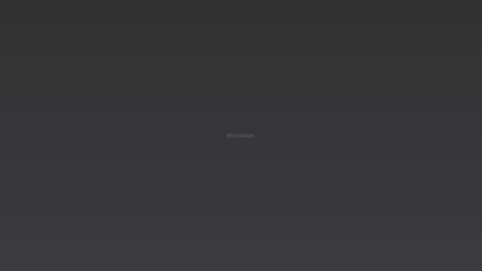

The Beauty of Minimalism

Minimalism isn't about having less for the sake of less. It's about intentionality. Removing noise allows the essential to stand out.
I recently decluttered my workspace and digital files. The result was surprising: faster decisions, clearer focus, and more room for creativity.
Minimal design principles — whitespace, restrained color, hierarchy — translate directly into better communication and calmer interfaces.